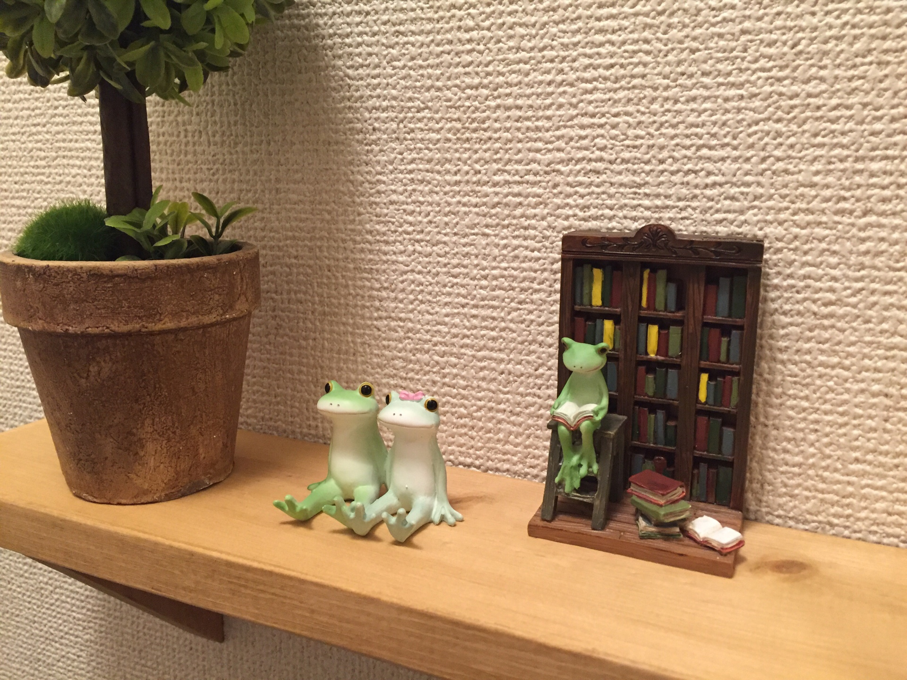

box-sizing:border-boxを体験する
「box-sizing:border-box」あり
「box-sizing:border-box」なし
サムネイル画像付きリンク
「float:left」で実装

カエルの置物
ここにはテキストが入ります。ここにはテキストが入ります。ここにはテキストが入ります。ここにはテキストが入ります。
「display:flex」で実装
カエルの置物
ここにはテキストが入ります。ここにはテキストが入ります。ここにはテキストが入ります。ここにはテキストが入ります。
CSSをボタンを作る
BUTTON